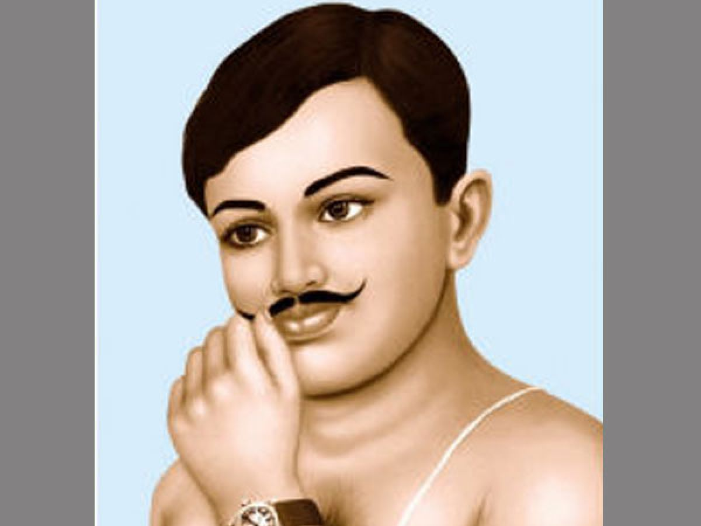
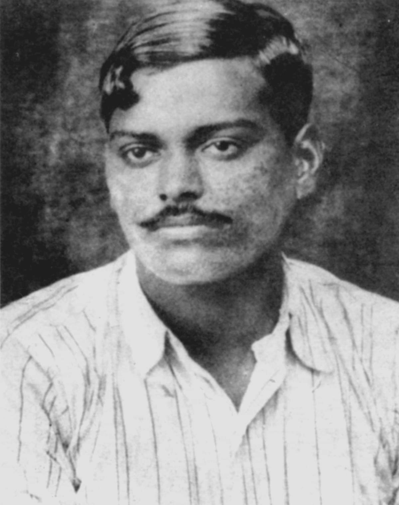

The Courageous Heart Of
-Chandra Shekhar Azad
• Chandra Shekhar Azad was born in 23 July, 1906 in Bhabra, a small town in Madhaya Pradesh.This town is now called Chandra Shekhar Azad town
• He was then introduced to nationalism and participated in the nonviolent movements under the leadership of Mahatma Gandhi.
• Azad was drawn into the Indian national movement at a young age. When apprehended by the police at age 15 while participating in Mohandas K. Gandhi’s noncooperation movement.
• His unconditional love and selfless sacrifice are considered to be the epitome of patriotism in Indian history
 